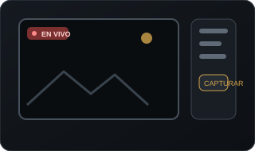

Explorar cámaras
—⌕ Buscar y filtrar⌄
Cámaras cerca de ti
Pulsa el botón y verás las cámaras más cercanas con su distancia. Tu ubicación se procesa solo en este dispositivo.
Solo cámaras que funcionan
Buscamos cámaras públicas de cualquier fuente dentro de un radio, descartamos las dadas de baja y comprobamos que su video responda antes de mostrarlas.
Todas las cámaras en su lugar
—
511NJ DelDOT Video verificado Alerta/obra © OpenStreetMap · © CARTO
Atajos con datos reales
Todo se calcula con inventarios oficiales y fuentes públicas gratuitas. Cada respuesta muestra fuente, hora y confianza. No se reconocen rostros, placas ni vehículos, y nunca se inventa un incidente.
✦ Asistente · pregunta en lenguaje natural⌄
➜ Copiloto de ruta · cámaras a lo largo del camino⌄
☀ Resumen matutino personal⌄
Une tus favoritos, el clima actual y las alertas NWS activas. Se genera al pulsar; no envía tus favoritos a ningún servidor externo.
⚑ Alertas por zona con confianza⌄
★ Favoritos inteligentes⌄
Agrupa tus favoritos por corredor, confianza, tour y cercanía. La agrupación se hace en este dispositivo y no se sincroniza.
◈ Triangulación de contexto⌄
Explica una cámara usando cámaras vecinas reales, alertas NWS en el punto y clima actual. No interpreta la imagen.
⧉ Comparador de cámaras vecinas⌄
Abre hasta 4 ángulos reales de la misma zona y compara la calidad de cada fuente. Puedes cambiar las cámaras dentro del comparador.
☀ Clima animado en tiempo real⌄
Observación de estación NWS, clima actual de Open-Meteo, alertas del punto y frecuencia de NOAA Weather Radio. La animación cambia con el código WMO real; se detiene si tu dispositivo pide menos movimiento.
◉ Herramientas combinadas · corredor y sensores⌄
Cruza clima NWS/Open-Meteo, eventos 511NJ, aforos USGS y la frecuencia de NOAA Weather Radio con reglas deterministas. No interpreta video ni declara riesgo sin umbral oficial.
Recorre los 85 tours oficiales
La pertenencia de cada cámara viene de 511NJ, no de su nombre. La narración usa coordenadas y zonas reales; puedes escucharla con la voz del dispositivo.
Emisoras públicas verificadas
Audio directo de cada emisora por HTTPS. Elige una categoría y una emisora: el texto «en vivo» viene de los metadatos reales del stream o de su playlist HLS. Esta app no graba ni redistribuye la señal.
Visor en vivo
Stream oficial de la agencia
Elige una cámara del inventario o usa tu GPS para ver la más cercana.
—
Los streams se sirven mediante un proxy local para respetar el origen exigido por cada agencia. Las fuentes públicas no ofrecen control PTZ remoto: el acercamiento es digital.